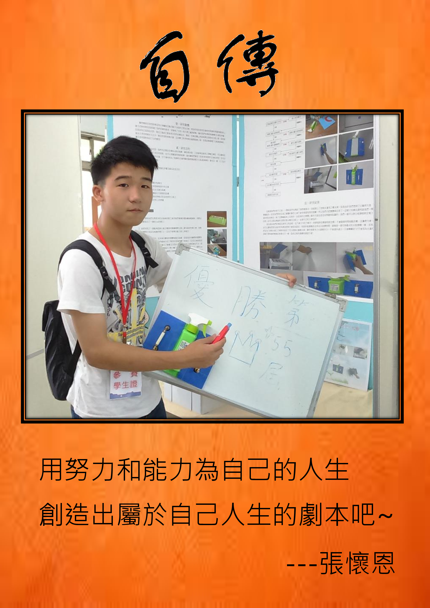

個人簡介 ：
我的名字叫張懷恩。我在家中排行第三，上有各一個姊姊和哥哥，在家中我扮演的角色是孝順聽話的弟弟，從小開始我就被教導要獨立自主、要為自己所做的一切負責，父親是以剛柔並濟的方式來教導我，非常重視我的教育，總是會利用一堆時間與我探討社會議題，讓我懂得如何獨立思考而不盲從。在團體中做事認真積極與負責任的態度讓我在遇到困頓時，不害怕、不逃避，並能勇於面對挫折，並冷靜思考應對之道。
對工作看法與態度 ：
從小我就覺得「守時與守信」是非常重要的，於是我的手錶總是快他 人十分鐘，這樣一來我就有十分鐘的備用時間，在工作上除了守時與守信當然最重要的是能夠積極面對工作與完成上司交代的任何一項工作，並秉持著合理的要求是鍛鍊，不合理的是磨練，這樣心情就不會受到影響也隨之不會影響到工作。
生涯規劃 ：
我的短期目標是累積多一點社會經驗與工作經驗；而中長期目標則是不斷的吸收現代各項產業所需要的外語能力以及電腦軟硬體資訊的各種能力，例如Linux、PHP、HTML、RWD與Larave等。
未來展望 ：
現代的各項產業不管是科技產業還是服務業都十分重視外語的能力以及電腦應用的能力；所以在未來我將會積極培養外語的能力以及電腦應用的能力，我期許自己能夠學會各種有關於「資訊」的任何技術。此外在課餘與業餘的時間我會去培養我的人際關係以及溝通能力，以符合團體合作的企業精神，來換取未來在職業場上發展的優勢，並能在各項領域上有不凡的成果。未來期許自己能夠在關於資訊的相關領域有良好的操作技能，因為我堅持相信人只要努力沒有達不到的目標。
